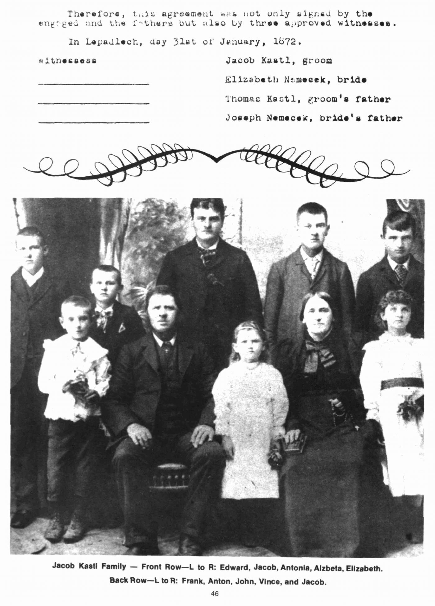

The book · The Family of Jacob Kastl
Page 46 Jacob Kastl Family — Front Row—L to R: Edward, Jacob, Antonia, Alzbeta, Elizabeth. Back Row—L toR: Frank, Anton, John, Vince, and Jacob.


Transcription
Therefore, this agreement was not only signed by the engaged and the fathers but also by three approved witnesses.
In Lepadlech, day 31st of January, 1872.
witnessess
\_\_\_\_\_\_\_\_\_\_\_\_\_\_\_\_\_\_\_\_ \_\_\_\_\_\_\_\_\_\_\_\_\_\_\_\_\_\_\_\_ \_\_\_\_\_\_\_\_\_\_\_\_\_\_\_\_\_\_\_\_
Jacob Kastl, groom Elizabeth Nemecek, bride Thomas Kastl, groom's father Joseph Nemecek, bride's father

Transcriber’s notes
Top of page concludes the typewritten English translation of the 1872 marriage agreement begun on the previous page (typewriter face, faint). 'witnessess' and 'Lepadlech' as typed; the three witness signature lines are blank. A decorative scroll/flourish ornament separates the text from the photo (not listed as a photo). Caption second line printed 'L toR' (no space), kept as printed.